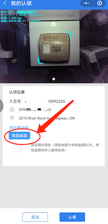
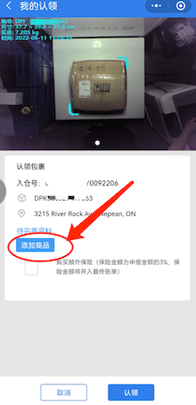

免责声明：本网站内容仅作为群主的个人理解，所有ERBridge业务内容以ERBridge公司的小程序、客服说明为准。更新日期：2025年5月23日。

ER Bridge是一家已运营超过 6 年的加拿大本土物流公司，公司主体、仓库都在卡尔加里，具有别的海运公司无法匹及的清关能力。ER Bridge的Ottawa站点成立于2022年。 我们的优势不是“快”，而是“稳”。 ✔️ 每月稳定发货2-5船，无隐性费用，只按体积收费，明明白白发海运！
下图展示0.02立方米的实际大小，请参考：

价格随市场波动，请关注小程序首页顶部横幅了解最新价格：
渥太华不接单边超过2米，哪怕只超过1厘米的包裹，否则收取加长费用【具体以ER客服报价为准】。深圳仓库只搬运包裹，不提供拆箱、合并、木架等服务。
🔸 两立方以上的货请先联系日间客服，可直接送达您家车库。
下单并认领后静待货物到达，群主会私信通知到货、送货。送货前需付清运费（可用加币或人民币支付，人民币支付需支付1%手续费）。每月约2-5船，无截团日期。历史最快到货28天，最慢130天，大多数在2-4个月间。详情见： 到货历史记录
新用户常见问题：
1. 怎么下单？ 2. 哪些可以运？ 3. 运费怎么算？
请观看以下3个视频（内容较旧，仅供参考）：
不允许运的物品清单
如果国内仓库发现包裹内含禁止寄运物品，可能直接销毁。如客户需保留，需支付额外处理费（每件$20加币）及退回运费（国内快递报价）。
再次提醒，单边超过2米的包裹不允许运输。深圳仓库仅搬运包裹，不提供拆箱、合并、打木架等服务。体积计费原则详见上文。
家里打包请注意：
下方是群主小结的文字说明（小程序24年改版过，流程略有不同，但大致一样。群主最近忙，就不更新了）。
方法一: 扫描此图片，长按此图，识别二维码，然后联系群主，告知
方法二：点击微信“发现”--“小程序”（英文叫Mini Programs），直接搜索ER，er，或者E.R.，注意有旧版小程序，请选择新版E.R.Bridge国际物流
1. 首先确保自己的默认仓库是渥太华：路径在小程序-点下面的“我的”
2. 到小程序首页点击“海运拼箱”
3.进入页面，可以看到自己的取货点是渥太华，点击复制按钮可以复制
注意：️渥太华的客户号是ONO2开头的，后面是5个字母。每一个ER客户的收件地址都是一样的，仓库根据ONO2知道这个包裹目的地是渥太华，我根据5个字母，知道是哪位客户的货
4. 复制到你买东西的收货地址就可以了。注意收件人和地址两处都要有ONO2+客户号，因为有的快递会隐藏收货人，有的隐藏具体地址，会造成仓库识别不出来是谁的包裹
5. 更改保存好您的收件地址信息后，就可以在购物平台买买买。** 但务必确保卖家把你的入仓号写在快递单里或者包裹上，有时候您在收件地址里写了，卖家却没有写上在快递单里，会导致您的包裹被拒收，最好给卖家备注好：务必把地址里的入仓号写在快递单上或包裹上。
6. 深圳仓库收到您的包裹后，您会在主页的“海运待认领”中看到您有新的需要被认领的包裹。
7. 点击“海运待认领”，进入认领界面，每个包裹带有包裹照片、快递号，小件包裹在照片左上角会有照片尺寸重量信息可供参考

8. 点击“认领”后点击“添加商品”进行申报。
 

9.选择商品类别，填写商品品名，选择商品数量，勾选“本人承诺填写内容真实”，点击“立即创建”。完成一个商品的添加，如果一个包裹内有多个商品，可以添加多次商品来完成。
10.添加完这个包裹内的所有商品后，可以在这里勾选是否要购买额外保险（默认带保险，每个入仓号封顶赔偿30刀），每$3 加币保$100（要注意家里打包的除外），最多可以买5 份，也就是$15 加币保$500。
请务必查看使用手册中，对于保险的说明！！易碎品不赔偿。外包装不破损不赔偿等条例！
11.认领后就不要再去“海运待认领”看，而是去“我的运单”：点击“我的运单“，进入包裹列表，下图箭头处表示船号：1002表示10月第2船。

另外，上图中右边蓝色代表包裹状态：各种状态的含义如下:
左边有包裹的入仓号，快递单号，国内仓库，收货终点仓库，包裹的体积，重量，入仓日期。当前位置会在装箱发出后更新包裹到达目的地前的位置。